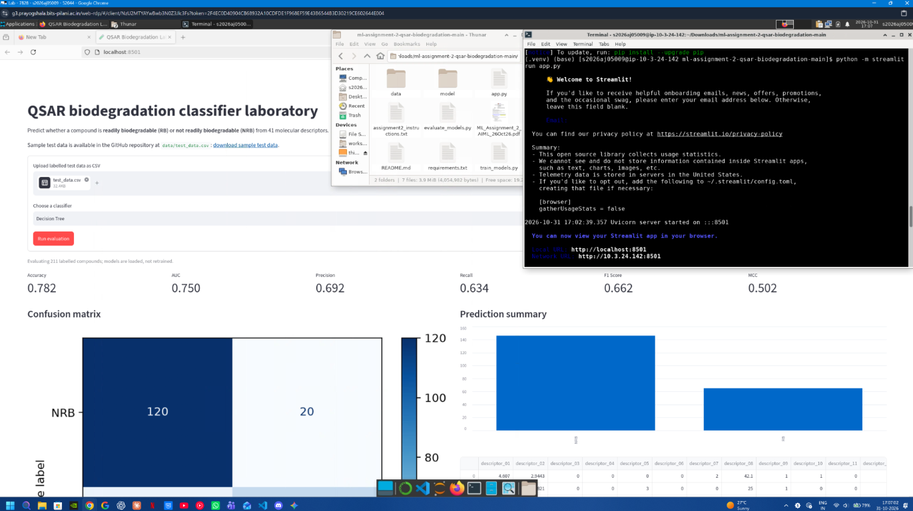

QSAR Biodegradation Classifier
BITS WILP M.Tech AIML
The repository contains all required submission materials:
app.py and training scripts.requirements.txt with the application dependencies.README.md describing the project and results.data/test_data.csv.model/ directory.The application is deployed using Streamlit Community Cloud and opens an interactive frontend for uploading test data, selecting a model, and viewing evaluation results.
The screenshot below shows the assignment execution on BITS Virtual Lab.

Given molecular descriptors for an organic compound, predict whether it is readily biodegradable (RB) or not readily biodegradable (NRB). The application accepts a labelled CSV test set, loads one of the pre-trained models, and reports its performance without retraining on uploaded data.
This project uses the QSAR biodegradation dataset from the UCI Machine Learning Repository .
data/qsar_biodegradation.csv.random_state=2026.
The labelled holdout used for the results is
data/test_data.csv.
The descriptor names are neutral
(descriptor_01 through descriptor_41) because
the original UCI file provides descriptor values without a header row.
The original source remains the authoritative definition of each
descriptor.
Repository: https://github.com/saurabhtayal/ml-assignment-2-qsar-biodegradation
Application: https://ml-assignment-2-qsar-biodegradation-onsuyyappeeggmgshgvpift.streamlit.app/
All models were trained on the same training partition and evaluated on the same untouched 211-row test partition. Standard scaling is included in the Logistic Regression, KNN, and SVM pipelines. The Decision Tree and Gaussian Naive Bayes models use the original numerical values.
| ML Model Name | Accuracy | AUC | Precision | Recall | F1 | MCC |
|---|---|---|---|---|---|---|
| Logistic Regression | 0.8673 | 0.8925 | 0.8308 | 0.7606 | 0.7941 | 0.6980 |
| Decision Tree | 0.7820 | 0.7501 | 0.6923 | 0.6338 | 0.6618 | 0.5025 |
| KNN | 0.8152 | 0.8570 | 0.7162 | 0.7465 | 0.7310 | 0.5906 |
| Naive Bayes | 0.6919 | 0.8335 | 0.5242 | 0.9155 | 0.6667 | 0.4742 |
| Support Vector Machine | 0.8578 | 0.8913 | 0.8361 | 0.7183 | 0.7727 | 0.6742 |
| ML Model Name | Observation about model performance |
|---|---|
| Logistic Regression | Best overall accuracy, AUC, F1, and MCC. Scaling helps it combine the many correlated descriptors into a stable linear boundary. |
| Decision Tree | Lowest AUC among the tree-based and distance-based alternatives; its single, bounded-depth tree cannot represent all descriptor interactions as effectively. |
| KNN | Balanced performance, but weaker than the linear and kernel models. Distance-based decisions are sensitive to the high-dimensional descriptor space even after scaling. |
| Naive Bayes | Highest recall, so it identifies most RB compounds, but its low precision and accuracy indicate many false positives. The conditional-independence assumption is restrictive for molecular descriptors. |
| Support Vector Machine | Very strong AUC and precision, close to Logistic Regression. Its slightly lower recall leads to a marginally lower F1 and accuracy on this split. |
| Overall winner | Logistic Regression, because it leads on the principal aggregate measures while remaining interpretable and efficient. SVM is a close second. |